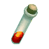
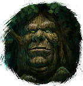

Кровь комара
Предметы / С врагов
Открыть в интерактивной вики →
| Вес | 5 |
|---|---|
| Цена | 180 |
Описание
Компонент, используемый для изготовления  Средняя Фляга Маны. Её создает
Средняя Фляга Маны. Её создает
Средняя Фляга Маны. Её создает 
Эгустахефиум в Деревне Друидов.| Ингредиент для изготовления Средней фляги маны. Изготавливает Эгустагефий в Деревне друидов. |
Дроп
Применение
|
Как добыть
Получаем за победу над:
|